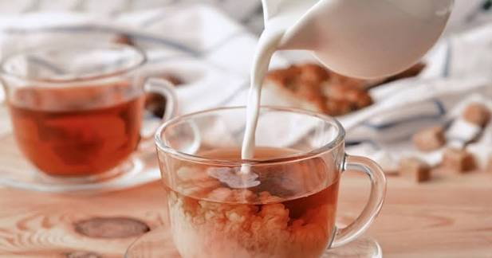
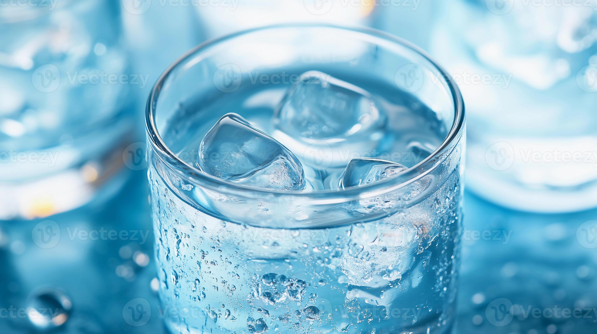

← Natrag na popis stranica završnog rada
Zašto ti čaj postane mlak, a led u vodi se otopi?
Zamisli da si si natočio_la vrući čaj, a onda si u njega dodao_la malo hladnog mlijeka ili vode jer ti je bilo prevruće za piti. Nakon nekoliko trenutaka čaj više nije ni vruć ni hladan već je postao ugodno mlak. Slična se stvar događa i kad kockicu leda spustiš u čašu vode sobne temperature. Led se postupno topi, a voda oko njega postaje hladnija, sve dok se na kraju ne izjednače.

U oba slučaja dogodilo se isto: toplina je prešla s tijela više temperature na tijelo niže temperature, sve dok obje tekućine (ili tekućina i led) nisu poprimile zajedničku, srednju temperaturu. To se ne događa slučajno niti proizvoljno nego postoji pravilo po kojem možemo unaprijed izračunati kolika će biti ta konačna temperatura, ako znamo mase i početne temperature tekućina koje miješamo.

Pitanje za razmišljanje
Ako pomiješaš jednaku količinu tople vode (npr. 40 °C) i hladne vode (npr. 20 °C), hoće li konačna temperatura smjese biti točno na sredini, tj. 30 °C? A što ako pomiješaš puno više hladne vode nego tople, hoće li rezultat biti isti?
Na ovo pitanje odgovorit ćemo pokusom u sljedećoj lekciji Pokus.